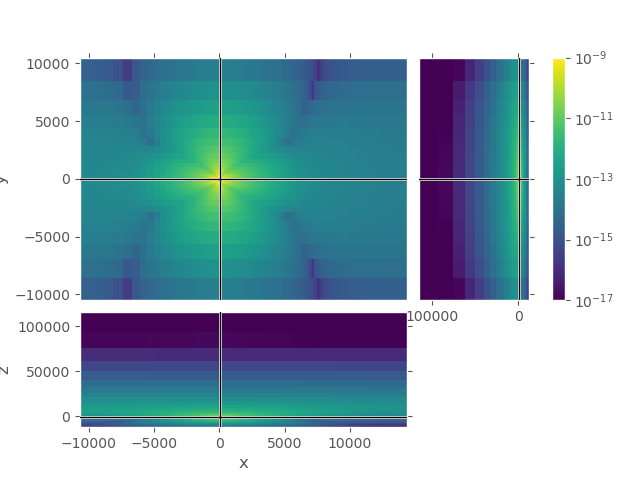
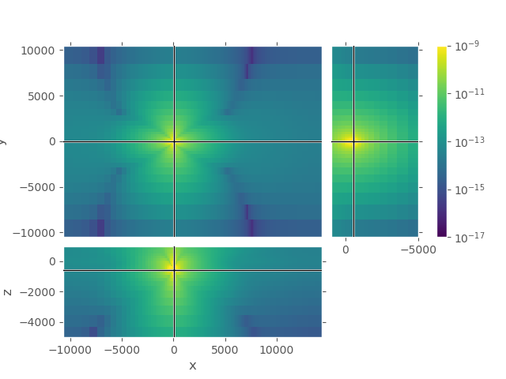
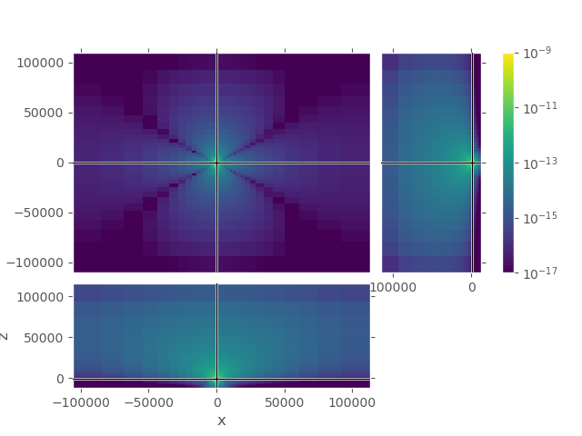

Note
Click here to download the full example code
2. Ensure computation domain is big enough¶
Ensure the boundary in \(\pm x\), \(\pm y\), and \(+ z\) is big enough for \(\rho_\text{air}\).
The air is very resistive, and EM waves propagate at the speed of light as a wave, not diffusive any longer. The whole concept of skin depth does therefore not apply to the air layer. The only attenuation is caused by geometrical spreading. In order to not have any effects from the boundary one has to choose the air layer appropriately.
The important bit is that the resistivity of air has to be taken into account also for the horizontal directions, not only for positive \(z\) (upwards into the sky). This is an example to test boundaries on a simple marine model (air, water, subsurface) and compare them to the 1D result.
import emg3d
import empymod
import numpy as np
import matplotlib.pyplot as plt
from matplotlib.colors import LogNorm
plt.style.use('ggplot')
Model, Survey, and Analytical Solution¶
water_depth = 500 # 500 m water depth
off = np.linspace(2000, 7000, 501) # Offsets
src = [np.array([0]), np.array([0]),
np.array([-water_depth+50])] # Source at origin, 50 m above seafloor
rec = [off, off*0, -water_depth] # Receivers on the seafloor
depth = [-water_depth, 0] # Simple model
res = [1, 0.3, 1e8] # Simple model
freq = 0.1 # Frequency
# Compute analytical solution
epm = empymod.dipole(src, rec, depth, res, freq)
Out:
:: empymod END; runtime = 0:00:00.095754 :: 1 kernel call(s)
3D Modelling¶
# Parameter we keep the same for both grids
x_inp = {'fixed': src[0], 'domain': [src[0][0]-500, off[-1]+500]}
y_inp = {'fixed': src[1], 'domain': [src[1][0], src[1][0]]}
z_inp = {'fixed': [0, -water_depth-100, 100], 'domain': [-600, 100]}
inp = {'freq': freq, 'alpha': [1, 1.25, 0.01], 'min_width': 100}
# Solver parameters
solver_inp = {
'verb': 3,
'sslsolver': True,
'semicoarsening': True,
'linerelaxation': True
}
1st grid, only considering air resistivity for +z¶
Here we are in the water, so the signal is attenuated before it enters the air. So we don’t use the resistivity of air to compute the required boundary, but 100 Ohm.m instead. (100 is the result of a quick parameter test with \(\rho=1e4, 1e3, 1e2, 1e1\), and the result was that after 100 there is not much improvement any longer.)
Also note that the function emg3d.meshes.get_hx_h0 internally uses six
times the skin depth for the boundary. For \(\rho\) = 100 Ohm.m and
\(f\) = 0.1 Hz, the skin depth \(\delta\) is roughly 16 km, which
therefore results in a boundary of roughly 96 km.
See the documentation of emg3d.meshes.get_hx_h0 for more information on
how the grid is created.
# Get cell widths and origin in each direction
xx_1, x0_1 = emg3d.meshes.get_hx_h0(res=[res[1], res[0]], **x_inp, **inp)
yy_1, y0_1 = emg3d.meshes.get_hx_h0(res=[res[1], res[0]], **y_inp, **inp)
zz_1, z0_1 = emg3d.meshes.get_hx_h0(res=[res[1], res[0], 100], **z_inp, **inp)
# Create grid and correpsoding model
grid_1 = emg3d.TensorMesh([xx_1, yy_1, zz_1], x0=np.array([x0_1, y0_1, z0_1]))
res_1 = res[0]*np.ones(grid_1.nC)
res_1[grid_1.gridCC[:, 2] > -water_depth] = res[1]
res_1[grid_1.gridCC[:, 2] > 0] = res[2]
model_1 = emg3d.Model(grid_1, property_x=res_1, mapping='Resistivity')
# QC
grid_1.plot_3d_slicer(
np.log10(model_1.property_x), zlim=(-2000, 100), clim=[-1, 2])
# Define source and solve the system
sfield_1 = emg3d.get_source_field(
grid_1, [src[0], src[1], src[2], 0, 0], freq)
efield_1 = emg3d.solve(grid_1, model_1, sfield_1, **solver_inp)
Out:
Skin depth (m/l-r) [m] : 872 / 1592
Survey domain [m] : -500 - 7500
Computation domain [m] : -10250 - 13750
Final extent [m] : -10672 - 14353
Min/max cell width [m] : 100 / 100 / 940
Alpha survey/comp : 1.000 / 1.090
Number of cells (s/c/r) : 128 (80/48/0)
Skin depth (m/l-r) [m] : 872 / 1592
Survey domain [m] : 0 - 0
Computation domain [m] : -10000 - 10000
Final extent [m] : -10493 - 10493
Min/max cell width [m] : 100 / 100 / 1974
Alpha survey/comp : 1.000 / 1.220
Number of cells (s/c/r) : 32 (2/30/0)
Skin depth (m/l/r) [m] : 872 / 1592 / 15916
Survey domain [m] : -600 - 100
Computation domain [m] : -10300 - 100000
Final extent [m] : -11998 - 115900
Min/max cell width [m] : 100 / 100 / 21754
Alpha survey/comp : 1.000 / 1.230
Number of cells (s/c/r) : 48 (7/41/0)
:: emg3d START :: 12:02:59 :: v0.12.0
MG-cycle : 'F' sslsolver : 'bicgstab'
semicoarsening : True [1 2 3] tol : 1e-06
linerelaxation : True [4 5 6] maxit : 50 (3)
nu_{i,1,c,2} : 0, 2, 1, 2 verb : 3
Original grid : 128 x 32 x 48 => 196,608 cells
Coarsest grid : 2 x 2 x 3 => 12 cells
Coarsest level : 6 ; 4 ; 4
[hh:mm:ss] rel. error solver MG l s
h_
2h_ \ /
4h_ \ /\ /
8h_ \ /\ / \ /
16h_ \/\/ \/ \/
[12:03:01] 1.203e-02 after 1 F-cycles 4 1
[12:03:04] 1.427e-03 after 2 F-cycles 5 2
[12:03:07] 1.814e-04 after 3 F-cycles 6 3
[12:03:09] 6.345e-05 after 4 F-cycles 4 1
[12:03:12] 7.031e-06 after 5 F-cycles 5 2
[12:03:14] 1.088e-06 after 6 F-cycles 6 3
[12:03:14] 7.126e-07 after 1 bicgstab-cycles
> CONVERGED
> Solver steps : 1
> MG prec. steps : 6
> Final rel. error : 7.126e-07
:: emg3d END :: 12:03:14 :: runtime = 0:00:16
2nd grid, considering air resistivity for +/- x, +/- y, and +z¶
See comments below the heading of the 1st grid regarding boundary.
# Get cell widths and origin in each direction
xx_2, x0_2 = emg3d.meshes.get_hx_h0(res=[res[1], 100], **x_inp, **inp)
yy_2, y0_2 = emg3d.meshes.get_hx_h0(res=[res[1], 100], **y_inp, **inp)
zz_2, z0_2 = emg3d.meshes.get_hx_h0(res=[res[1], res[0], 100], **z_inp, **inp)
# Create grid and correpsoding model
grid_2 = emg3d.TensorMesh([xx_2, yy_2, zz_2], x0=np.array([x0_2, y0_2, z0_2]))
res_2 = res[0]*np.ones(grid_2.nC)
res_2[grid_2.gridCC[:, 2] > -water_depth] = res[1]
res_2[grid_2.gridCC[:, 2] > 0] = res[2]
model_2 = emg3d.Model(grid_2, property_x=res_2, mapping='Resistivity')
# QC
# grid_2.plot_3d_slicer(
# np.log10(model_2.property_x), zlim=(-2000, 100), clim=[-1, 2])
# Define source and solve the system
sfield_2 = emg3d.get_source_field(
grid_2, [src[0], src[1], src[2], 0, 0], freq)
efield_2 = emg3d.solve(grid_2, model_2, sfield_2, **solver_inp)
Out:
Skin depth (m/l-r) [m] : 872 / 15916
Survey domain [m] : -500 - 7500
Computation domain [m] : -100000 - 100000
Final extent [m] : -105879 - 112879
Min/max cell width [m] : 100 / 100 / 21176
Alpha survey/comp : 1.000 / 1.250
Number of cells (s/c/r) : 128 (80/48/0)
Skin depth (m/l-r) [m] : 872 / 15916
Survey domain [m] : 0 - 0
Computation domain [m] : -100000 - 100000
Final extent [m] : -110350 - 110350
Min/max cell width [m] : 100 / 100 / 16918
Alpha survey/comp : 1.000 / 1.180
Number of cells (s/c/r) : 64 (2/62/0)
Skin depth (m/l/r) [m] : 872 / 1592 / 15916
Survey domain [m] : -600 - 100
Computation domain [m] : -10300 - 100000
Final extent [m] : -11998 - 115900
Min/max cell width [m] : 100 / 100 / 21754
Alpha survey/comp : 1.000 / 1.230
Number of cells (s/c/r) : 48 (7/41/0)
:: emg3d START :: 12:03:15 :: v0.12.0
MG-cycle : 'F' sslsolver : 'bicgstab'
semicoarsening : True [1 2 3] tol : 1e-06
linerelaxation : True [4 5 6] maxit : 50 (3)
nu_{i,1,c,2} : 0, 2, 1, 2 verb : 3
Original grid : 128 x 64 x 48 => 393,216 cells
Coarsest grid : 2 x 2 x 3 => 12 cells
Coarsest level : 6 ; 5 ; 4
[hh:mm:ss] rel. error solver MG l s
h_
2h_ \ /
4h_ \ /\ /
8h_ \ /\ / \ /
16h_ \ /\ / \ / \ /
32h_ \/\/ \/ \/ \/
[12:03:20] 1.026e-02 after 1 F-cycles 4 1
[12:03:26] 1.865e-03 after 2 F-cycles 5 2
[12:03:31] 4.943e-04 after 3 F-cycles 6 3
[12:03:36] 5.636e-05 after 4 F-cycles 4 1
[12:03:42] 9.893e-06 after 5 F-cycles 5 2
[12:03:47] 3.248e-06 after 6 F-cycles 6 3
[12:03:47] 2.379e-06 after 1 bicgstab-cycles
[12:03:52] 2.610e-07 after 7 F-cycles 4 1
[12:03:52] 2.645e-07 after 2 bicgstab-cycles
> CONVERGED
> Solver steps : 2
> MG prec. steps : 7
> Final rel. error : 2.645e-07
:: emg3d END :: 12:03:52 :: runtime = 0:00:38
Plot receiver responses¶
# Interpolate fields at receiver positions
emg_1 = emg3d.get_receiver(
grid_1, efield_1.fx, (rec[0], rec[1], rec[2]))
emg_2 = emg3d.get_receiver(
grid_2, efield_2.fx, (rec[0], rec[1], rec[2]))
plt.figure(figsize=(10, 7))
# Real, log-lin
ax1 = plt.subplot(321)
plt.title('(a) lin-lin Real')
plt.plot(off/1e3, epm.real, 'k', lw=2, label='analytical')
plt.plot(off/1e3, emg_1.real, 'C0--', label='grid 1')
plt.plot(off/1e3, emg_2.real, 'C1:', label='grid 2')
plt.ylabel('$E_x$ (V/m)')
plt.legend()
# Real, log-symlog
ax3 = plt.subplot(323, sharex=ax1)
plt.title('(c) lin-symlog Real')
plt.plot(off/1e3, epm.real, 'k')
plt.plot(off/1e3, emg_1.real, 'C0--')
plt.plot(off/1e3, emg_2.real, 'C1:')
plt.ylabel('$E_x$ (V/m)')
plt.yscale('symlog', linthreshy=1e-15)
# Real, error
ax5 = plt.subplot(325, sharex=ax3)
plt.title('(e) clipped 0.01-10')
# Compute the error
err_real_1 = np.clip(100*abs((epm.real-emg_1.real)/epm.real), 0.01, 10)
err_real_2 = np.clip(100*abs((epm.real-emg_2.real)/epm.real), 0.01, 10)
plt.ylabel('Rel. error %')
plt.plot(off/1e3, err_real_1, 'C0--')
plt.plot(off/1e3, err_real_2, 'C1:')
plt.axhline(1, color='.4')
plt.yscale('log')
plt.ylim([0.008, 12])
plt.xlabel('Offset (km)')
# Imaginary, log-lin
ax2 = plt.subplot(322)
plt.title('(b) lin-lin Imag')
plt.plot(off/1e3, epm.imag, 'k')
plt.plot(off/1e3, emg_1.imag, 'C0--')
plt.plot(off/1e3, emg_2.imag, 'C1:')
# Imaginary, log-symlog
ax4 = plt.subplot(324, sharex=ax2)
plt.title('(d) lin-symlog Imag')
plt.plot(off/1e3, epm.imag, 'k')
plt.plot(off/1e3, emg_1.imag, 'C0--')
plt.plot(off/1e3, emg_2.imag, 'C1:')
plt.yscale('symlog', linthreshy=1e-15)
# Imaginary, error
ax6 = plt.subplot(326, sharex=ax2)
plt.title('(f) clipped 0.01-10')
# Compute error
err_imag_1 = np.clip(100*abs((epm.imag-emg_1.imag)/epm.imag), 0.01, 10)
err_imag_2 = np.clip(100*abs((epm.imag-emg_2.imag)/epm.imag), 0.01, 10)
plt.plot(off/1e3, err_imag_1, 'C0--')
plt.plot(off/1e3, err_imag_2, 'C1:')
plt.axhline(1, color='.4')
plt.yscale('log')
plt.ylim([0.008, 12])
plt.xlabel('Offset (km)')
plt.tight_layout()
plt.show()
Plot entire fields to analyze and compare¶
1st grid¶
Upper plot shows the entire grid. One can see that the airwave attenuates to amplitudes in the order of 1e-17 at the boundary, absolutely good enough. However, the amplitudes in the horizontal directions are very high even at the boundaries \(\pm x\) and \(\pm y\).
grid_1.plot_3d_slicer(
efield_1.fx.ravel('F'), view='abs', v_type='Ex', clim=[1e-17, 1e-9],
xslice=src[0], yslice=src[1], zslice=rec[2],
pcolor_opts={'norm': LogNorm()})
grid_1.plot_3d_slicer(
efield_1.fx.ravel('F'), view='abs', v_type='Ex', clim=[1e-17, 1e-9],
zlim=[-5000, 1000],
xslice=src[0], yslice=src[1], zslice=rec[2],
pcolor_opts={'norm': LogNorm()})
- 
- 
2nd grid¶
Again, upper plot shows the entire grid. One can see that the field attenuated sufficiently in all directions. Lower plot shows the same cut-out as the lower plot for the first grid, our zone of interest.
grid_2.plot_3d_slicer(
efield_2.fx.ravel('F'), view='abs', v_type='Ex', clim=[1e-17, 1e-9],
xslice=src[0], yslice=src[1], zslice=rec[2],
pcolor_opts={'norm': LogNorm()})
grid_2.plot_3d_slicer(
efield_2.fx.ravel('F'), view='abs', v_type='Ex', clim=[1e-17, 1e-9],
xlim=[grid_1.vectorNx[0], grid_1.vectorNx[-1]], # Same square as grid_1
ylim=[grid_1.vectorNy[0], grid_1.vectorNy[-1]], # Same square as grid_1
zlim=[-5000, 1000],
xslice=src[0], yslice=src[1], zslice=rec[2],
pcolor_opts={'norm': LogNorm()})
- 
| Thu Jul 30 12:03:55 2020 CEST | |||||
| OS | Linux | CPU(s) | 4 | Machine | x86_64 |
| Architecture | 64bit | RAM | 15.5 GB | Environment | Python |
| Python 3.8.3 (default, Jul 2 2020, 16:21:59) [GCC 7.3.0] | |||||
| numpy | 1.18.5 | scipy | 1.5.0 | numba | 0.50.1 |
| emg3d | 0.12.0 | empymod | 2.0.2 | xarray | 0.16.0 |
| discretize | 0.4.15 | h5py | 2.10.0 | matplotlib | 3.2.2 |
| IPython | 7.16.1 | ||||
| Intel(R) Math Kernel Library Version 2020.0.1 Product Build 20200208 for Intel(R) 64 architecture applications | |||||
Total running time of the script: ( 0 minutes 57.848 seconds)
Estimated memory usage: 9 MB